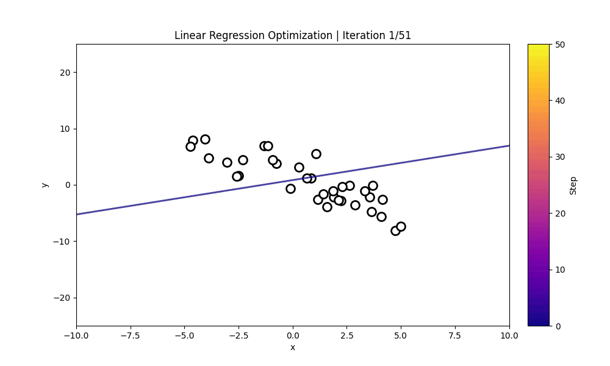

Introduction to In-Context Learning
For Language, Computer Vision, and Robotics

Learn by showing, not retraining
In-Context Learning (ICL) enables large language models to adjust to new tasks without changing their internal weights. Instead of retraining or fine-tuning a model, we provide instructions and examples directly in the prompt.
The model detects patterns in those demonstrations and applies them to new queries. This makes it possible for one model to shift between classification, translation, summarization, prediction, and reasoning based solely on the current context. The capability was prominently demonstrated in Language Models are Few-Shot Learners (Brown et al., 2020).
This site introduces the foundations of ICL and provides hands-on examples in regression, reinforcement learning, pattern recognition, and translation. Every example is available as a Google Colab tutorial and can be run with the free Gemini version.
Explore the demos
See how LLMs learn patterns, make predictions, classify data, tune controllers, and perform reinforcement learning—all without retraining.
12 tutorials shown
Sequence Prediction
.gif)
Explore how examples of a changing sine wave help an LLM identify its structure and forecast the next values in a time series.
Pattern Completion

Use demonstrations from the Abstract and Reasoning Corpus to infer hidden numerical transformations and complete a new pattern from context.
Movie Translation

Learn fictional vocabularies from examples inspired by Avatar, Lord of the Rings, Star Trek, and Game of Thrones, then translate new phrases.
Glucose Level Forecast

Provide recent glucose readings as context and examine how an LLM recognizes temporal trends to estimate upcoming values.
PID Tuning

See how performance examples can guide an LLM toward improved proportional, integral, and derivative controller settings without retraining.
Binary Classification

Turn a small set of labeled hazelnut-quality examples into a binary classification rule, then apply it to previously unseen samples.
Image Classification

Use visual examples and contextual labels to distinguish common weld defects and understand how demonstrations guide image classification.
Linear Regression

Iteratively refine the slope and intercept of a linear model by placing prior parameter choices and their results in the prompt.
ProPS
"Reinforcement Learning using LLMs"

Apply Prompted Policy Search to MountainCar-v0 and watch an LLM improve control parameters using the outcomes of earlier attempts.
ProPS+
"RL using LLMs with Semantics"

Add semantic environment descriptions to Prompted Policy Search and study how that context supports policy improvement on Swimmer-v5.
SAS-Prompt
"Self-Improvement using LLMs"

Explore self-adaptive prompting in a golf simulation, where feedback from each attempt helps the LLM propose a better next action.
Numerical Optimization
"Numerical Optimization inside the LLM"

Use previous points and objective values as context to search the one- and two-dimensional Ackley functions for better solutions.